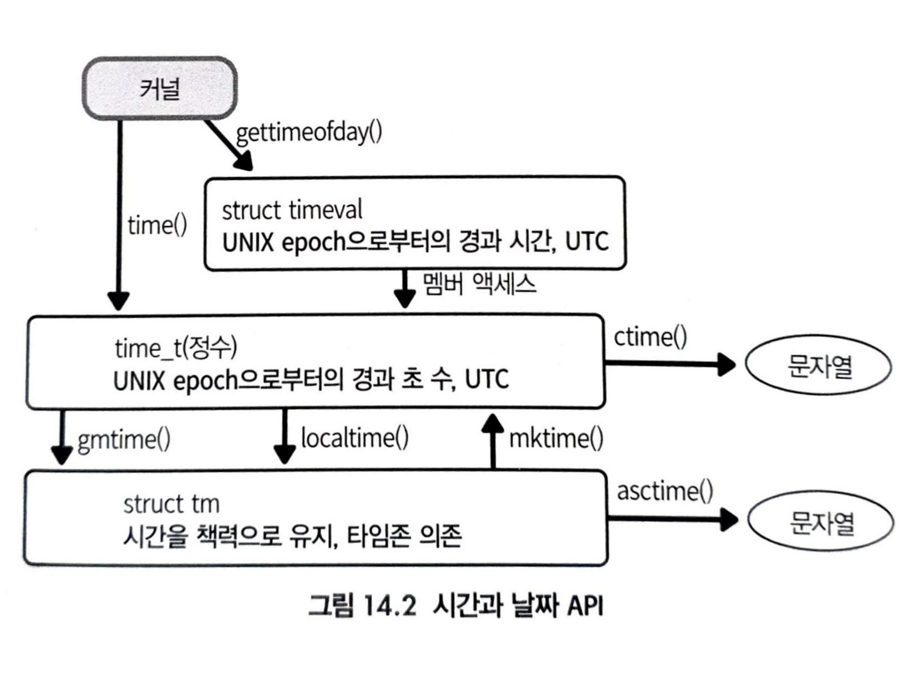
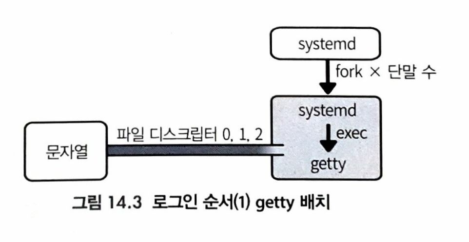
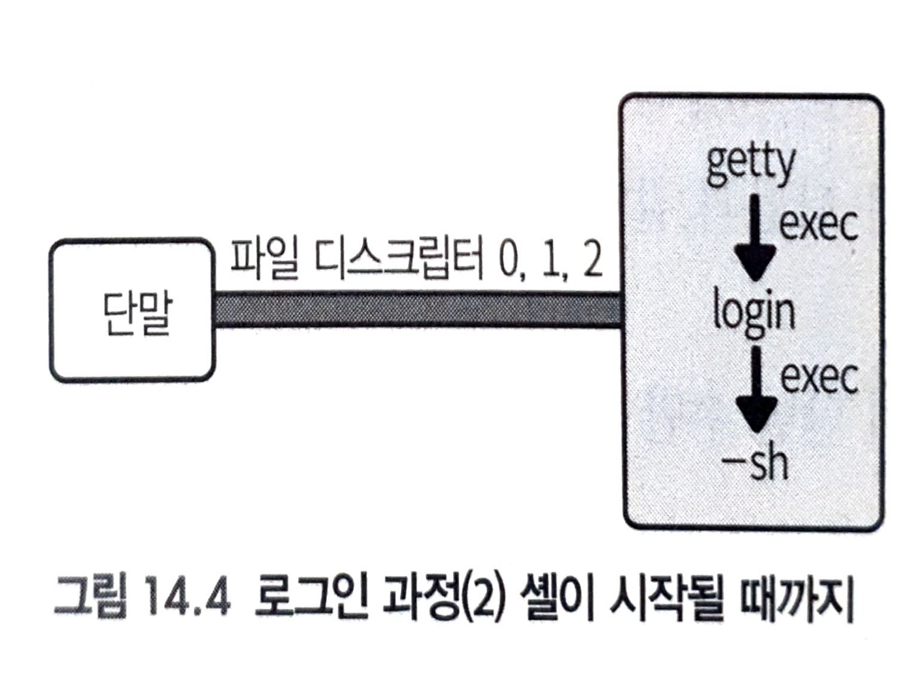

프로세스가 사용하는 리소스, 날짜, 시간, 로그인 기록 명령 및 API
프로세스가 사용하는 리소스
- 프로세스가 동작하기 위해선 여러가지 리소스가 필요하다.
- CPU, 메모리, 버스(디바이스 입출력) …
getrusage():2 리소스 사용량 get
#include <sys/time.h>
#include <sys/resource.h>
int getrusage(int who, struct rusage *usage);
- 기능: 프로세스 리소스 사용량을 두 번째 인자 usage 에 기록한다.
| return | value |
| 성공 | 0 |
| 실패 | -1, errno set |
| parameter | Description |
|---|---|
| who | RUSAGE_SELF 현재 프로세스의 리소스 사용량 기록 RUSAGE_CHILDREN 자식 프로세스의 리소스 사용량 기록. 자식 프로세스는 ‘현재 프로세스에서 fork()한 모든 자식 프로세스 중에서 wait() 중인 것’ |
| *usage | who에서 선택한 설정을 기록하는 곳 |
man getrusage에는 struct rusage에 많은 멤버 필드가 있는데, 리눅스에서는 그중 일부에만 정확한 값이 기재된다.
| 타입 | 멤버 이름 | 의미 |
|---|---|---|
| struct timeval | ru_utime | 사용된 사용자 시간 |
| struct timeval | ru_stime | 사용된 시스템 시간 |
| long | ru_maxrss | 최대 RSS 크기(KB 단위) |
| long | ru_majflt | 메이저 폴트* 횟수 |
| long | ru_minflt | 마이너 폴트** 횟수 |
| long | ru_inblock | 블록 입력 오프레이션 횟수 |
| long | ru_oublock | 블록 출력 오프레이션 횟수 |
메이저 폴트*: 물리 주소에 연결되지 않은 가상 주소에 접근한 결과 물리 페이지 할당이 일어난 횟수 + 저장소와의 입출력이 수반
마이너 폴트**: 물리 주소에 연결되지 않은 가상 주소에 접근한 결과 물리 페이지 할당이 일너난 횟수 + 저장소와의 입출력이 수반X
날짜와 시간
- 시스템 시간(System time): 프로세스를 위해 커널이 작업한 시간
- ex) 시스템 콜
- 사용자 시간(User time): 프로세스가 스스로를 위해 소비한 시간
- UNIX epoch: 1970년 1월 1일 0:00 AM UTC
- 이 시간을 저장하는 변수 타입이 time_t signed long이라 32bit
time():2
#include <time.h>
time_t time(time_t *tptr);
- 기능: UNIX epoch으로 부터 현재까지의 경과 초 수 반환 및 *tptr에도 같은 값 기록
Sec 단위 밖에 안되는 점 주의!
| return | value |
| 성공 | UNIX epoch으로 부터 현재까지의 경과 초 수 반환 |
| 실패 | NULL |
gettimeofday():2
#include <sys/time.h>
int gettimeofday(struct timeval *tv, struct timezone *tz);
struct timeval{
time_t tv_sec; "초"
suseconds_t tv_usec; "마이크로 초(μSec 1x10^-6)"
}
- 기능: UNIX epoch으로 부터 현재까지 경과 시간을 첫 번째 인자 tv에 기록한다.
- struct timeval의 tv_sec에는 초 단위 시간 기록
- struct timeval의 tv_usec에는 마이크로 초(μ 1x10-6 1.0e-6)[sec] 단위 시간이 기록
- 예) 1234.987632 sec
- tv_sec: 1234
- tv_usec: 987632 로 각각 기록됨
- 두 번째 인자 *tz는 항상 NULL
| return | value |
| 성공 | 0 |
| 실패 | -1, errno set |
실제 사용시 아래 처럼 함수로 만들어 사용하자
#include <sys/time.h>
#include <unistd.h>
double timer(void){
struct timeval Tvalue;
struct timezone dummy;
gettimeofday(&Tvalue, &dummy);
double etime = (double)Tvalue.tv_sec + 1.0e-6*((double)Tvalue.tv_usec);
return etime;
}
int main(void){
double startTime = timer();
double endTime = timer();
printf("%lf,lf,lf",startTime,endTime,(endTime-startTime));
}
localtime(), gmtime():3
- time_t 값을 년월일 표현으로 바꿔준다.
#include <time.h>
struct tm *localtime(const time_t *timep);
struct tm *gmtime(const time_t *timep);
- 기능: time\t(초 단위) 시간을 struct tm 타입으로 변환
- localtime(): 시스템 로컬 시간대(한국에 있다면 KST, UTC+9)
- gmtime(): 협정 세계시(UTC)
| return | value |
| 성공 | struct tm 타입으로 변환 |
| 실패 | NULL, errno set |
struct tm 타입은 각각 멤버가 연/월/일/시/분/초 로 가진다.
#include <time.h>
struct tm {
int tm_sec; /* Seconds (0-60) */
int tm_min; /* Minutes (0-59) */
int tm_hour; /* Hours (0-23) */
int tm_mday; /* Day of the month (1-31) */
int tm_mon; /* Month (0-11) */
int tm_year; /* Year - 1900 */
int tm_wday; /* Day of the week (0-6, Sunday = 0) */
int tm_yday; /* Day in the year (0-365, 1 Jan = 0) */
int tm_isdst; /* Daylight saving time */
};
mktime():3 struct tm -> time_t
#include <time.h>
time_t mktime(struct tm *tm);
- 기능: struct tm 타입 -> time_t(초 단위)
| return | value |
| 성공 | struct tm 타입 -> time_t(초 단위) |
| 실패 | -1 |
asctime(), ctime():3 time_t, struct tm 값 문자열 변환
#include <time.h>
char *asctime(const struct tm *tm);
char *ctime(const time_t *timep);
- 기능: time_t나 struct tm 타입을 문자열로 변환
- ex) “Sat Sep 25 00:43:37 2017\n”
strftime():3
#include <time.h>
size_t strftime(char *buf, size_t bufsize, const char *fmt, const struct tm *tm);
- 기능: *tm 인자로 지정한 시간을 *fmt에 따라 포맷하고, *buf에 기록한다. 단, bufsize까지만 입력
*fmt는 printf()와 비슷하게 구성하여, 출력하고 싶은 시간의 요소를 ['%'+1 문자]로 지정한다.
| return | value |
| 성공 | buf에 써넣은 Byte 수 |
| 실패 | 0 |
*fmt
| 문자 | 로케일 의존 | 의미 |
|---|---|---|
| %a | O | 요일 축약형(LC_TIME=C 일 때 Mon, Tue, Wed, Thu, Fri, Sat, Sun) |
| %A | O | 요일(LC_TIME=C 일 때 Monday, Tuesday, Wednesday, Thursday, Saturday, Sunday) |
| %b | O | 월 축약형(LC_TIME=C 일 때 Jan, Feb, Mar, Apr, May, Jun, Jul, Aug, Sep, Oct, Nov, Dec) |
| %B | O | 월(LC_TIME=C 일 때 January, February, March, April, May, Jun, July, August, September, October, November, December) |
| %c | O | 현재 로케일에서 가장 자연스러운 형식의 날짜와 시간 |
| %C | 년의 백자리 이상 | |
| %d | 날짜, 두 자릿수를 맞춰 앞에 0을 넣음(01~31) | |
| %D | %m/%d/%y와 동일 | |
| %e | 날짜, 두 자릿수를 맞춰 앞에 스페이스를 넣음("1"~31) | |
| %F | %Y-%m-%d와 동일 | |
| %h | O | %b의 별명 |
| %H | 24시간 단위 시간, 두 자릿수를 맞추기 위해 앞에 0을 넣음(01~23) | |
| %I | 12시간 단위 시간, 두 자릿수를 맞추기 위해 앞에 0을 넣음(01~12) | |
| %i | 1월 1일을 기점으로 한 일수. 세 자릿수를 맞추기 위해 앞에 0을 넣음(001~366) | |
| %k | 24시간 단위 시간. 두 자릿수를 맞추기 위해 앞에 스페이스를 넣음("1"~23) | |
| %l | 12시간 단위 시간. 두 자릿수를 맞추기 위해 앞에 스페이스를 넣음("1"~12) | |
| %m | 월 숫자 표시(01~12) | |
| %M | 분(00~59) | |
| %n | '\n' | |
| %p | O | 오전/오후 표기(LC_TIME=C에서는 “AM” 또는 “PM”) |
| %P | O | 오전/오후 표기(LC_TIME=C에서는 “am” 또는 “pm”) |
| %r | O | 오전/오후가 붙어 있는 시간(예: 01:15:41 AM) |
| %R | 24시간 표기의 시분. (HH:MM). %H:%M과 동일 | |
| %s | 유닉스 에폭 이후의 경과 초수 | |
| %S | 초. 두 자릿수를 맞춰 앞에 0을 넣음(00~61). 60과 61은 윤초 | |
| %t | '\t' | |
| %T | %H:%M:%S와 동일 | |
| %u | 요일을 나타내는 번호(1~7). 월요일이 1, 일요일이 7 | |
| %W | 요일을 나타내는 번호(0~6). 일요일이 0, 토요일이 6 | |
| %x | O | 연월일 |
| %X | O | 시분초 |
| %y | 연의 마지막 두 자리(00~99) | |
| %Y | 연 | |
| %z | 메일 형식으로 표현한 UTC와 시차(-1200~+1200). 한국은 +0900 | |
| %Z | O | 타임존(LC_TIME=C일 때 GMT나 KST) |
| %% | '%' 문자 자체 |
c, C, x X, y, Y는 %와 문자 사이에 ‘E’를 놓으면 로케일 의존의 다른 표기를 사용할 수 있다.
d, e, H, I, m, M, S, u, U, v, w, W, y는 %와 문자 사이에 ‘O’를 놓으면 숫자의 다른 표기를 출력한다.
예를 들면 아라비아 숫자가 로마 숫자나 한자 숫자가 되는 경우가 있을 수 있다.
시간 포맷에 대한 표준
- ISO 8601이 범용적
- 2017년 8월 9일 오후 2시 45분 31초(KST)
- 2017-08-09T14:45:31+09:00
이러한 표기법은 다음과 같은 특징이 있다.
- 연도는 항상 네자리
- 월, 일, 시, 분, 초는 항상 0을 채움으로 두 자리
- 연월일의 구분 문자는 슬래시가 아니고 하이픈
- 날짜와 시간 사이는 'T'가 들어감
- 시는 항상 24시간제
- UTC와의 시차를 ‘+09:00’과 같은 형식으로 추가
ISO 8601 포맷은 항상 연도가 네 자리이고 구분 기호과 규칙적이어서 사람이 읽기에도 쉽고, 프로그램에서 파싱하기에도 좋다.
strftime()으로 ISO 8601 포맷으로 시간을 출력할 때는 포맷 문자열 ‘%FT%T%z’를 사용하여 포맷한 후,
마지막 두 문자 앞에 ‘:’을 추가
시간 관련 API 정리

로그인
- systemd 또는 init이 단말 수만큼 getty 명령어 가동
- getty는 단말로부터 사용자 이름을 입력하는 것을 기다려, login 명령어를 시작
- login 명령어가 사용자를 인증
- 셸 시작
1. systemd, getty

systemd참고, 그런데 systemd는 로그인을 기다리는 getty라는 프로그램을 시작하는 역할도 가지고 있다.
- getty
- 단말을 open()하고 read()해서, 사용자가 사용자명을 입력하는 것을 기다린다.
- 사용자명이 입력되면 getty는 dup()를 사용하여 fd 0,1,2에 단말을 연결하고 새로운 프로그램 login을 exec한다.
2,3. 인증

- login은 사용자 인증을 해야한다.
- 사용자 DB의 위치는 설정에 따라 달라진다.
- 일반적으로 /etc/passwd, 최근에는 /etc/shadow로 분리하는 섀도 패스워드(shadow password)
- 기업이나 대학에서는 여러 시스템 간 DB 공유 위해 NIS, LDAP 등 사용
- 통합하기 위해 getpwuid() API 있고, /etc/nsswitch.conf에 있다.
- 시스템별 커스터마이즈: 리눅스는 다양한 장소, 다양한 용도로 사용되므로 시스템별로 커스터마이즈 사항
- 패스워드 종류. 문자 수 제한, 암호화 방법
- 로그인할 수 있는 날짜나 시간의 제한
- 로그인할 수 있는 사용자 제한
- 전통적인 login 명령어는 위 항목들은 모두 /etc/login.defs에서 설정
- 단점: 로그인을 취급하는 다른 명령어, 예를 들어 telnet이나 ssh, ftp 등에 같은 설정 항목을 중복 입력해야 한다.
- 최근 PAM(Pluggable Authentication Module) 사용
- PAM에는 사용자를 인증하는 PAM이라는 API가 있어, 명령어가 이것을 부르는 것만으로 인증이 진행된다.
- PAM 시스템의 실체는 공유 라이브러리인데, 위와 같은 설정을 유연하게 하기 위해 동적 로드를 사용하고 있다.
- 동적 로드되는 라이브러리의 장소는 /lib/x86_64-linux-gnu/security(Ubuntu), /lib64/security(CentOS)
- 즉, libc가 놓여있는 디렉터리 바로 밑의 security 디렉터리 안이다.
4. 로그인 셸
- 인증 후, 셸을 exec하는 일만 남았다.
- 다소 특이한 것은, exec할 때 명령어 이름의 앞에 '-'를 붙여 시작하는 것이다.
execl("/bin/sh", "-sh", ....); - 시작한 셸을 로그인 셸라고 한다.
- 동작이 다소 느리다.
로그인 기록 w, last, lastlog 명령
- 리눅스에는 w나 last와 같이, 누가 어떤 단말로 로그인했는지 기록을 출력하는 명령어가 있다.
다음은 w명령을 실행한 결과다. 현재 aamine 사용자가 로그인하고 있는 것을 알 수 있다.$ w 17:25:12 up 7:35, 2 users, load average: 0.03, 0.03, 0.00 USER TTY FROM LOGIN@ IDLE JCPU PCPU WHAT aamine pts/18 192.168.10.54 Wed00 0.00s 1.45s 0.00s w - 이런 로그인 기록은 login, systemd가 파일로 관리
- w 명령은 현재 로그인된 사용자를 출력, /var/run/utmp에 위치
- last 명령은 과거 로그인 정보, /var/log/wtmp
- lastlog 명령어는 /var/log/lastlog 기록 보마